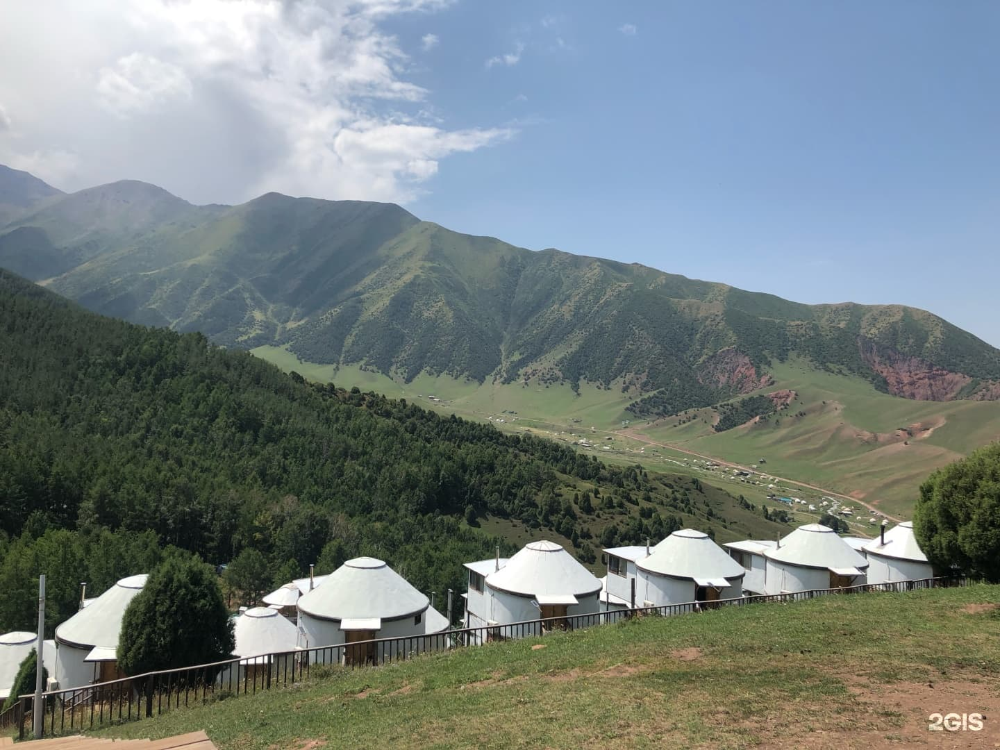
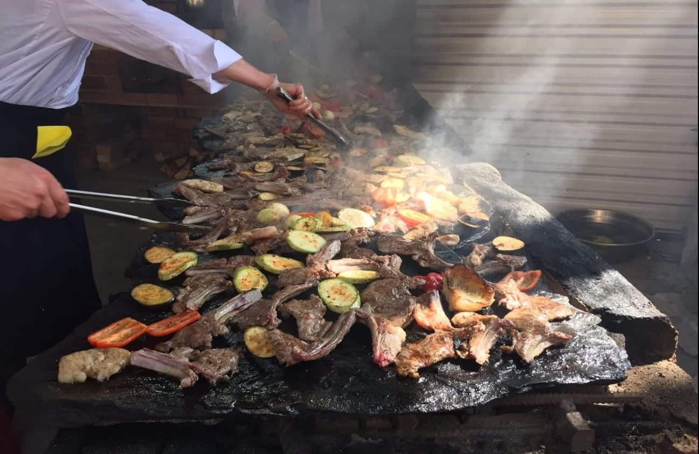
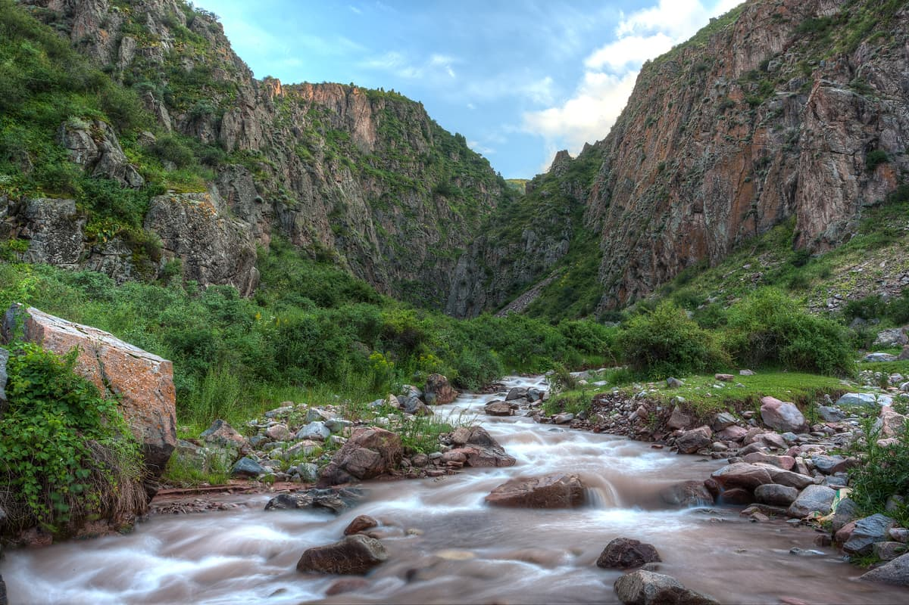
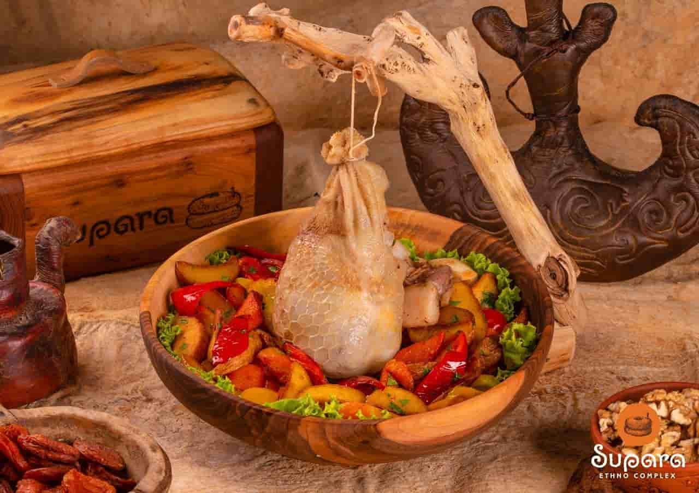
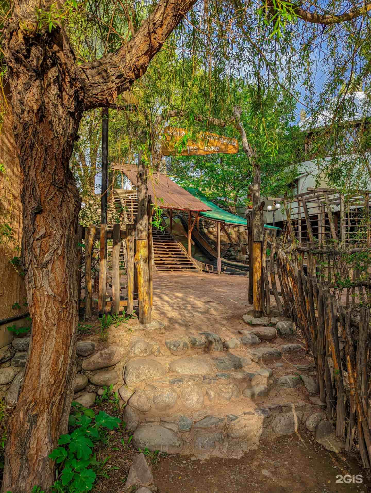
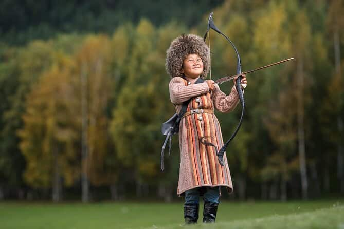

Supara Chunkurchak is a mountain ethno resort in the Chunkurchak tract, around 40 km south of Bishkek. Think: yurts and cozy rooms, big valley views, fresh air, and one of the most popular Kyrgyz cuisine restaurants — all in one easy day-trip (or overnight) escape. :contentReference[oaicite:1]{index=1}

What is it?
A scenic complex combining Kyrgyz nomadic style with comfort: yurt-shaped stays, mountain paths nearby, and a restaurant focused on traditional food made from natural ingredients. :contentReference[oaicite:2]{index=2}
Photo spots




Traditional food
Come hungry. This is one of the main reasons people drive here. :contentReference[oaicite:3]{index=3}

Easy hikes
Short walks through pastures and mountain paths right from the complex. :contentReference[oaicite:4]{index=4}

Horse riding
Classic nomad activity — perfect for photos and a chill mountain experience. :contentReference[oaicite:5]{index=5}

Ethno activities
Try cultural activities like archery and workshops (season/availability varies). :contentReference[oaicite:6]{index=6}
Quick tips before you go
-
🚗
Perfect day tripEasy escape from Bishkek — go for lunch + sunset views. :contentReference[oaicite:7]{index=7}
-
🧥
Bring a jacketMountains can be cooler than the city even in summer.
-
📸
Golden hour is bestValley views look cinematic in late afternoon.
-
🥾
Wear comfy shoesIf you plan short hikes around the complex. :contentReference[oaicite:8]{index=8}